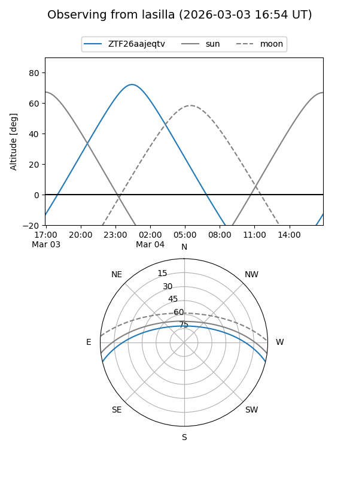
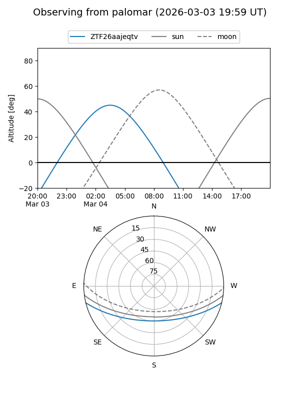

ZTF26aajeqtv
Target ZTF26aajeqtv at 2026-03-04 06:32
Aliases and brokers:
FINK: link
Lasair: link
ALeRCE: link
alt names
ZTF26aajeqtv (ztf,fink_ztf)
Coordinates:
equatorial (ra, dec) = 97.1117,-11.54219
equatorial (HMS+DMS) = 06:28:26.81,-11:32:31.88
galactic (l, b) = (220.7202,-10.28629)
Flags:
Photometry:
last ztfg=17.76
1 ztfg detections
Lightcurve
Visibility


Additional plots